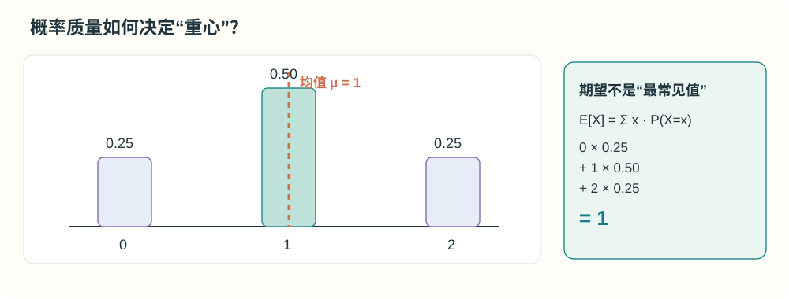
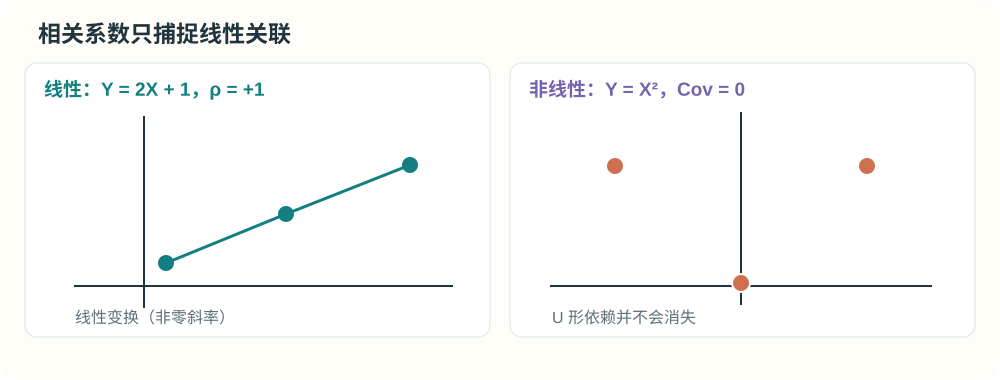
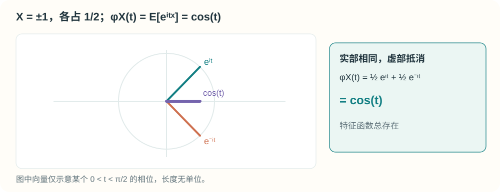

CHAPTER 04 · 概率基础
随机变量的数字特征
为什么两种噪声均值相同、风险却截然不同？用概率重心、二次误差、线性共变和特征函数，把完整分布压缩成可以解释的统计量，同时保留它们的适用边界。
- 区分均值、均方、方差及条件期望
- 正确应用切比雪夫上界并识别线性相关的局限
- 理解高阶矩的存在条件与特征函数的几何含义
为什么均值一样，系统风险却完全不同？
假设两台电压传感器的读数均值都是 0 V。传感器 A 的输出多数时间只在 −0.1 至 0.1 V 附近摆动；传感器 B 却经常超过 ±2 V。只看均值无法决定放大器量程、噪声预算或报警门限。我们需要一组彼此互补的量：期望描述中心，方差描述二次离散程度，协方差描述线性共变，分布的高阶矩和特征函数则提供更多形状信息。
贯穿这一章的简单模型是 X∈{0,1,2}，相应概率为 1/4、1/2、1/4。它可以描述两次公平独立硬币实验中正面的出现次数，因而所有结果都能用三个数核对。

期望是加权重心，而不是“最可能取到的数”
对有限支撑的离散变量，计算期望需要把每个取值乘以它出现的概率，再相加。对有 PDF 的连续变量，则使用积分。前提是相应的绝对一阶矩可积，这样期望是有限且定义良好的。
对于本章的 X，E[X]=0×0.25+1×0.5+2×0.25=1。期望也可能并非可能取值：一枚公平骰子的期望是 3.5，却不会掷出 3.5 点。
期望的线性性，与独立性无关
当 E|X|、E|Y| 有限时，不论 X、Y 是否相关，上式都成立。令 Y=2X+3，则 E[Y]=5。但“加权信号的均值”不能代替“加权信号的平均功率”：平均平方含有交叉项 E[XY]，不能仅把各分量的 E[X²] 直接相加。对于实时测量系统，分清均值、均方值与以欧姆为单位的物理功率非常重要。
条件期望：先按已知状态分组，再求整体平均
如果某个信道工作在“良好”和“衰落”两种状态，对误码事件指标 I（出错为 1，否则为 0）先计算各状态下的 E[I|S]，再按状态出现概率加权求和，就能得到平均误码概率。只要 E|I| 有限，全期望公式成立。
例：良好状态概率 0.9，误码率 10⁻⁶；衰落状态概率 0.1，误码率 10⁻²。平均误码率等于 0.9×10⁻⁶ + 0.1×10⁻² = 0.0010009。它既不是两个状态误码率的简单算术平均，也不意味着每一次发送序列都恰好达到这个数。
方差：为什么平方偏差比平均绝对偏差更常用？
把每次读数与均值的差平方，再对实验结果平均，就得到方差。平方保证非负，并使线性变换、最小二乘与相关计算拥有简洁的代数形式。标准差是方差的非负平方根，与原变量单位一致。
在本章模型中 E[X²]=0+0.5+1=1.5，所以 Var(X)=1.5−1²=0.5，标准差约为 0.707。平移不改变方差，乘常数 a 会使方差乘 a²：例如 Y=2X+3 的方差为 2。
功率和方差的不同：信号取值 X 的均方值 E[X²] 包括均值贡献。它等于 Var(X)+(E[X])²。只有当 E[X]=0 时，方差才与均方值相等；把方差直接称为所有信号的“平均功率”会漏掉非零均值部分。电压折算为负载功率时还必须指定阻抗。
两个信号相加时，必须检查交叉项
协方差为 0 时交叉项消失；独立足以保证这一点（在二阶矩有限时），但并非必要。前面的 Y=2X+3 显然与 X 不独立，因此不能把它们的方差直接相加。
只知道均值和方差，可以做什么保证？
切比雪夫不等式不要求高斯分布；只要方差有限且 σ>0，任何 k>0 都有：
若 ADC 的饱和阈值设在 μ±5σ，则仅依赖方差时可以保证饱和概率最多 4%；但这只是一个可能较松的上界。对于强重尾噪声，不能擅自采用正态模型的“几乎不会越界”结论。
协方差与相关系数：量化线性共变
对于均值 μX、μY 都存在的有限二阶矩随机变量，协方差把两个中心化变量的乘积求平均。相关系数将它按标准差归一化，前提是两者的标准差均非零。
柯西–施瓦茨不等式保证 |ρ|≤1。ρ=±1 在非退化情形下代表几乎处处满足确定的仿射关系（正或负斜率）；ρ=0 只说明没有线性的二阶共变，不代表变量独立。

多传感器系统使用协方差矩阵整理全部交叉项；该矩阵对称且半正定。它能刻画二阶结构，但不保证保留任意分布的尾依赖或高阶非线性结构。
矩与特征函数：从少数统计量走向完整分布
阶数为 r 的原点矩 E[Xʳ] 描述相对原点的结构；中心矩 E[(X−μ)ʳ] 描述围绕均值的形状。第三中心矩经 σ³ 归一化得到偏度，第四中心矩经 σ⁴ 归一化得到峰度，常见的“超额峰度”还会减去 3。这些矩必须存在才能使用。
| 统计量 | 定义 | 读法与限制 |
|---|---|---|
| 一阶原点矩 | E[X] | 中心位置，可能不存在 |
| 二阶中心矩 | E[(X−μ)²] | 方差，需要有限二阶矩 |
| 偏度 | E[(X−μ)³]/σ³ | 有符号的三阶不对称指标 |
| 峰度 | E[(X−μ)⁴]/σ⁴ | 四阶尾部/极端值敏感度，不能只解读为“峰尖” |
特征函数给出另一种视角：把每个可能的 X 映射到复平面单位圆上的 eⁱᵗˣ，然后按概率加权求向量平均。对任何实随机变量，它在所有实 t 上都存在，且其取值确定了分布。

独立随机变量相加时，它们的特征函数相乘；这使卷积、正态和极限定理推导可以变成频域中的代数运算。下一章将利用这一点解释变量变换与中心极限定理。
逐项计算：让公式可复查
下面的标准库代码对三个可能取值直接穷举，精确检查均值、方差和零相关反例，无需随机采样。
from math import isclose
xs, ps = [0, 1, 2], [.25, .5, .25]
mean = sum(x*p for x,p in zip(xs,ps))
second = sum(x*x*p for x,p in zip(xs,ps))
variance = second - mean**2
assert isclose(mean, 1) and isclose(variance, .5)
assert isclose(2*variance*2, 2) # Var(2X+3) = 4 Var(X)
counter_x = [-1,0,1]
counter_y = [x*x for x in counter_x]
assert sum(x*y for x,y in zip(counter_x,counter_y)) == 0
切比雪夫保证区间内部至少占 1−1/k²；它不是实际分布的估计值。
保证覆盖率 ≥
自检：E[X²] 和 E[X]² 什么时候相等？
当且仅当 Var(X)=0，即 X 几乎必然等于某个常数（在二阶矩存在时）。
自检：相关系数 0 能证明两个量互不影响吗？
不能。非线性依赖或尾部关联可能存在；需要额外独立性假设或联合分布证据。
参考与进一步核查
- MIT OCW · Inference & Limit Theorems：期望、方差、条件统计及概率界的课程背景。
- NIST Engineering Statistics Handbook · Skewness and Kurtosis：偏度与峰度定义的不同约定。
- MIT OCW · Theory of Probability：特征函数与极限定理。
- Distribution Theory · Bivariate Expectations：协方差与全方差公式的计算背景。